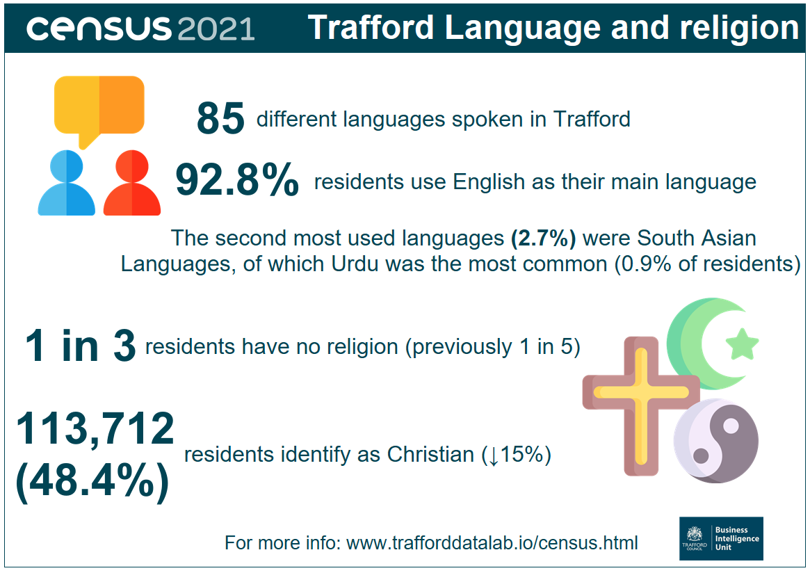

Source: Office for National Statistics.

The infographic, containing statistics released on from the census taken on Sunday 21 March 2021, shows that there are 85 different languages spoken in Trafford. 82.9% of residents use English as their main language and the second most used languages (2.7%) were South Asian languages, of which Urdu was the most common (0.9% of residents). With regards to religion, 1 in 3 residents have no religious affiliation (previously this was 1 in 5). The number of residents identifying as Christian was 113,712, representing 48.4% of the population. This is a decrease of 15% from the previous census in 2011.